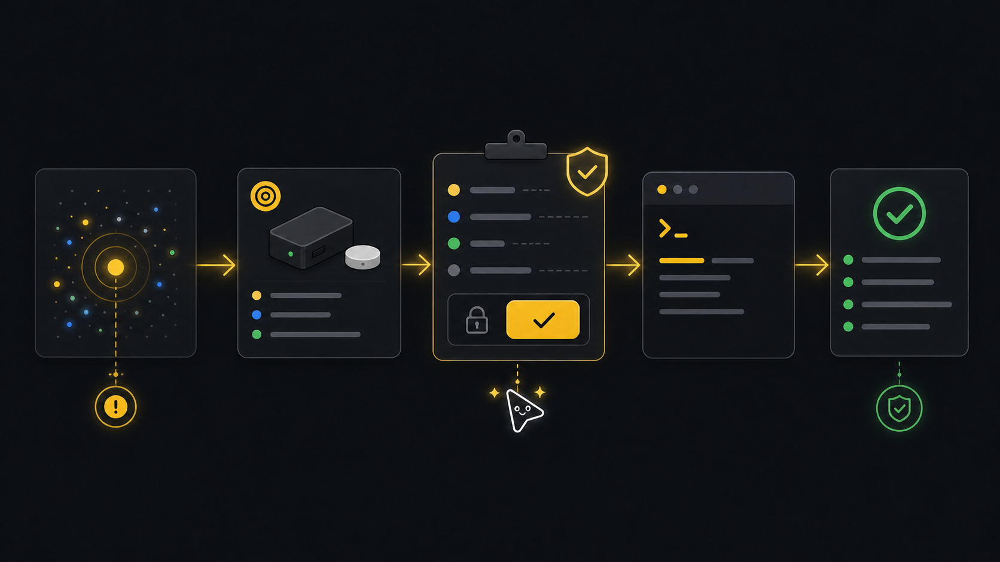

Remediation
Guided remediation.
Use this after triage shows a real problem and an operator needs help moving from "what is wrong?" to "what can we safely do next?"
Ask an agent
Describe the problem the way an operator would. The agent will inspect current state, choose a safe action if one exists, and stop with a plan for approval.
Something is broken in a room. Find the cause and prepare a fix plan. Do not apply changes.What the agent will do
- DiscoverUnderstand problemClarify the symptom, room, ticket, device, or incident when it is not already provided.
- InspectFind targetUse tenant state to find affected records.
- ChoosePlan commandSelect the safest workflow or endpoint.
- StopShow planShow target, effect, and resume path before any write.
- ReturnHandoffProvide the plan, files, and read-back command.
Ask how it works first
Ask this before a real incident if you want to understand where planning ends and approval begins.
What remediation workflows does xyte-cli support?
How do I plan a fix without applying it?
How do I resume an approved remediation?Goal
Remediation is not just "send a command." The useful sequence is: inspect, confirm the available action, apply only after approval, and read the state back.
Commands
Discover the current problem first
Start with active incidents and fleet context. Choose the target from tenant state, not from a stale ticket or guessed id.
xyte-cli ops watch incidents \ --tenant <profile-label> \ --profile incidents-active \ --once \ --strict-json \ --out ./artifacts/incidents.before.ndjson xyte-cli ops inspect fleet \ --tenant <profile-label> \ --render json \ --out ./artifacts/fleet.before-remediation.jsonPlan against the chosen target
After the incident and device are chosen, the plan shows required context and where the workflow will pause before a write.
xyte-cli flow run flow.guided-remediation \ --tenant <profile-label> \ --plan \ --var device_id=<device-id> \ --var incident_id=<incident-id> \ --once \ --strict-jsonList commands the device actually supports
Choose from returned commands. Do not guess a command name from another device model.
xyte-cli api call organization.commands.getCommands \ --tenant <profile-label> \ --path-json '{"device_id":"<device-id>"}' \ --query-json '{"page":1,"per_page":20}'Apply the approved step
Resume the planned run only after the operator approves the write.
xyte-cli flow run flow.guided-remediation \ --tenant <profile-label> \ --apply \ --resume <run-id-or-path> \ --strict-jsonRead back the state
Use a read command after the write so the final answer is based on tenant state, not just command submission.
xyte-cli api call organization.devices.getDevice \ --tenant <profile-label> \ --path-json '{"device_id":"<device-id>"}' xyte-cli ops watch incidents \ --tenant <profile-label> \ --profile incidents-active \ --once
Approval gate
For write-capable workflows, show the plan result first. Apply only when a human explicitly approves the next action and the target ids are known.
{
"status": "pending_gate",
"nextAction": "Review command and resume with --apply",
"requiresWrite": true,
"resume": "xyte-cli flow run flow.guided-remediation --tenant <profile-label> --apply --resume <run-id-or-path>"
}Continue only when the plan stops at a gate, the approved apply succeeds, and a follow-up read confirms the device or incident state. If the target is unclear, no safe command is available, apply fails, or read-back does not match, keep the case open and hand off the exact result.
Make this repeatable
# Environment
XYTE_PROFILE=<profile-label>
RUN_PATH=<run-id-or-path>
# Rerun path after approval
xyte-cli flow run flow.guided-remediation --tenant "$XYTE_PROFILE" --apply --resume "$RUN_PATH" --strict-jsonIf it fails
Stop. Choose a different remediation path or escalate to a human operator.
Do not continue the loop. Inspect the endpoint response and rerun triage.
Treat the action as incomplete and include the read-back result in the handoff.